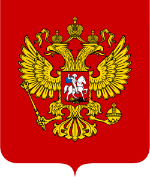

Федеральный закон «О политических партиях»
Принят Государственной Думой 30 августа 2026 года.
Одобрен Советом Федерации 01 сентября 2026 года.
В Российской Федерации признаются политическое многообразие, многопартийность. Исходя из этого конституционного принципа государством гарантируется равенство политических партий перед законом независимо от изложенных в их учредительных и программных документах идеологии, целей и задач. Государством обеспечивается соблюдение прав и законных интересов политических партий.
Глава I. Общие положения
Статья 1.
Предметом регулирования настоящего Федерального закона являются общественные отношения, возникающие в связи с реализацией гражданами Российской Федерации права на объединение в политические партии и особенностями создания, деятельности, реорганизации и ликвидации политических партий в Российской Федерации.
Статья 2.
Право граждан Российской Федерации на объединение в политические партии включает в себя право создавать на добровольной основе политические партии в соответствии со своими убеждениями, право вступать в политические партии либо воздерживаться от вступления в политические партии, право участвовать в деятельности политических партий в соответствии с их уставами, а также право беспрепятственно выходить из политических партий.
Статья 3.
Политическая партия — это общественное объединение, созданное в целях участия граждан Российской Федерации в политической жизни общества посредством формирования и выражения их политической воли, участия в общественных и политических акциях, в выборах и референдумах, а также в целях представления интересов граждан в органах государственной власти, органах публичной власти федеральных территорий и органах местного самоуправления.
Статья 4.
Политическая партия является видом общественной организации как организационно-правовой формы юридических лиц.
Статья 5.
Политическая партия должна отвечать следующим требованиям:
а) в политической партии должны состоять не менее пятнадцати граждан Российской Федерации;
б) руководящие и иные органы политической партии, ее региональные отделения и иные структурные подразделения должны находиться на территории Российской Федерации.
Статья 6.
Цели и задачи политической партии излагаются в ее уставе и программе.
Статья 7.
Основными целями политической партии являются:
а) формирование общественного мнения;
б) политическое образование и воспитание граждан;
в) выражение мнений граждан по любым вопросам общественной жизни, доведение этих мнений до сведения широкой общественности и органов государственной власти;
г) выдвижение кандидатов на выборах Президента Российской Федерации, депутатов Государственной Думы Федерального Собрания Российской Федерации, высших должностных лиц субъектов Российской Федерации, в законодательные органы Российской Федерации, органы публичной власти федеральных территорий, выборных должностных лиц местного самоуправления и в представительные органы муниципальных образований, участие в указанных выборах, а также в работе избранных органов.
Статья 8.
Деятельность политических партий основывается на Конституции Российской Федерации и регулируется федеральными конституционными законами, настоящим Федеральным законом и иными федеральными законами. Особенности гражданско-правового положения политической партии как вида общественной организации определяются федеральными законами.
Статья 9.
Политическая партия вправе осуществлять свою деятельность на всей территории Российской Федерации.
Статья 10.
В наименовании политической партии, как полном, так и сокращенном, не допускается использование наименований иных существующих в Российской Федерации политических партий и других общероссийских общественных объединений, наименований, схожих с этими наименованиями до степени смешения, либо наименований политических партий, прекративших свою деятельность вследствии ликвидации. Наименование политической партии должно содержать слова "политическая партия". Организационно-правовая форма в наименовании политической партии не указывается.
Статья 11.
В наименовании политической партии не допускается использование наименований органов государственной власти, органов публичной власти федеральных территорий и органов местного самоуправления, а также имени и (или) фамилии гражданина.
Статья 12.
Региональные отделения и иные структурные подразделения политической партии используют наименование этой политической партии с указанием своей территориальной принадлежности.
Статья 13.
Политическая партия может использовать в своем наименовании слова "Россия", "Российская Федерация" и образованные на их основе слова и словосочетания.
Статья 14.
Запрещается использовать наименование политической партии, оскорбляющее расовые, национальные или религиозные чувства.
Статья 15.
Политическая партия может иметь свои эмблему и иные символы, точное описание которых должно содержаться в уставе политической партии. Символика политической партии не должна совпадать с государственной символикой Российской Федерации, государственной символикой субъектов Российской Федерации, символикой федеральных территорий, символикой муниципальных образований, а также с государственной символикой иностранных государств.
Статья 16.
1. В качестве эмблемы и иных символов политической партии не могут быть использованы эмблемы и иные символы существующих в Российской Федерации политических партий, а также эмблемы и иные символы организаций, деятельность которых на территории Российской Федерации запрещена.
2. Использование политическими партиями эмблем государственных органов или образованных ими подведомственных органов не допускается.
Статья 17.
1. Деятельность политических партий основывается на принципах добровольности, равноправия, самоуправления, законности и гласности. Политические партии свободны в определении своей внутренней структуры, целей, форм и методов деятельности, за исключением ограничений, установленных настоящим Федеральным законом.
2. Деятельность политических партий не должна нарушать права и свободы человека и гражданина, гарантированные Конституцией Российской Федерации.
3. Политические партии действуют гласно, информация об их учредительных и программных документах является общедоступной.
4. Политические партии должны создавать мужчинам и женщинам, гражданам Российской Федерации разных национальностей, являющимся членами политической партии, равные возможности для представительства в руководящих органах политической партии, в списках кандидатов в депутаты и на иные выборные должности в органах государственной власти, органах публичной власти федеральных территорий и органах местного самоуправления.
Статья 18.
Запрещаются создание и деятельность политических партий, цели или действия которых направлены на осуществление экстремистской деятельности.
Статья 19.
Включение в уставы и программы политических партий положений о защите идей социальной справедливости, равно как и деятельность политических партий, направленная на защиту социальной справедливости, не может рассматриваться как разжигание социальной розни.
Статья 20.
Не допускается создание политических партий по признакам профессиональной, расовой, национальной или религиозной принадлежности.
Статья 21.
Структурные подразделения политических партий создаются и действуют только по территориальному признаку. Не допускается создание структурных подразделений политических партий в органах государственной власти, органах публичной власти федеральных территорий и органах местного самоуправления, в Вооруженных Силах Российской Федерации, в правоохранительных и иных государственных органах, в государственных и негосударственных организациях.
Статья 22.
Не допускается деятельность политических партий и их структурных подразделений в органах государственной власти, органах публичной власти федеральных территорий и органах местного самоуправления, за исключением законодательных органов субъектов Российской Федерации, представительных органов федеральных территорий и представительных органов муниципальных образований, в Вооруженных Силах Российской Федерации, в правоохранительных и иных государственных органах, в аппаратах законодательных органов субъектов Российской Федерации, в аппаратах представительных органов федеральных территорий, в государственных организациях.
Статья 23.
Создание и деятельность на территории Российской Федерации политических партий иностранных государств и структурных подразделений указанных партий не допускаются.
Статья 24.
В случае введения на всей территории Российской Федерации или в ее отдельных местностях чрезвычайного или военного положения деятельность политических партий осуществляется в соответствии с Федеральным конституционным законом "О военном и чрезвычайном положении".
Статья 25.
Вмешательство органов государственной власти, органов публичной власти федеральных территорий и их должностных лиц в деятельность политических партий, равно как и вмешательство политических партий в деятельность органов государственной власти, органов публичной власти федеральных территорий и их должностных лиц, не допускается.
Статья 26.
В случае отсутствия согласия политической партии либо непредставления ею позиции в установленный срок решение может быть принято органом государственной власти в одностороннем порядке.
Статья 27.
Лица, замещающие государственные или муниципальные должности, и лица, находящиеся на государственной или муниципальной службе, не вправе использовать преимущества своего должностного или служебного положения в интересах политической партии, членами которой они являются, либо в интересах любой иной политической партии. Указанные лица, за исключением депутатов Государственной Думы Федерального Собрания Российской Федерации, депутатов законодательных органов субъектов Российской Федерации, членов представительных органов федеральных территорий, избираемых на основе всеобщего равного и прямого избирательного права при тайном голосовании, и депутатов представительных органов муниципальных образований, не могут быть связаны решениями политической партии при исполнении своих должностных или служебных обязанностей.
Статья 28.
Президент Российской Федерации и Председатель Правительства Российской Федерации вправе приостанавливать свое членство в политической партии на срок осуществления своих полномочий.
Глава II. Создание политической партии
Статья 29.
Политическая партия создается свободно, без разрешений органов публичной власти и должностных лиц. Политическая партия может быть создана на учредительном съезде политической партии.
Статья 30.
Политическая партия считается созданной со дня принятия учредительным съездом решений о создании политической партии, об образовании ее региональных отделений, о принятии устава политической партии и о принятии ее программы, о формировании руководящих и контрольно-ревизионных органов политической партии. Делегаты учредительного съезда политической партии являются учредителями политической партии.
Статья 31.
Для подготовки, созыва и проведения учредительного съезда политической партии гражданами Российской Федерации, имеющими право быть членами политической партии, образуется учредительный комитет в составе не менее пяти человек.
Статья 32.
Учредительный комитет политической партии уведомляет в письменной форме федеральный орган исполнительной власти, уполномоченный на осуществление функций в сфере регистрации политических партий (далее — федеральный уполномоченный орган), о своем намерении создать политическую партию и указывает ее наименование. Вместе с уведомлением в указанный орган направляются:
а) сведения о членах учредительного комитета;
б) протокол собрания учредительного комитета, в котором указываются цель его создания, место нахождения, порядок использования денежных средств и иного имущества;
в) федеральный уполномоченный орган в день получения уведомления и иных документов, указанных в настоящей статьей, выдает уполномоченному лицу учредительного комитета документ, подтверждающий их представление.
Статья 33.
1. Учредительный комитет самостоятельно определяет порядок своей деятельности.
2. Уведомление федерального уполномоченного органа носит исключительно информационный характер и не является формой разрешения либо согласования.
Статья 34.
После проведения учредительного съезда политической партии учредительный комитет прекращает свою деятельность. При этом денежные средства и иное имущество учредительного комитета, а также финансовый отчет об их использовании, в котором указываются источники поступления денежных средств и иного имущества, передаются созданной политической партии.
Статья 35.
В случае, если учредительным комитетом в течение срока его полномочий не будет проведен учредительный съезд политической партии, по истечении этого срока учредительный комитет прекращает свою деятельность. При этом оставшиеся денежные средства учредительного комитета передаются жертвователям пропорционально внесенным пожертвованиям, иное имущество возвращается жертвователям. В случае невозможности возврата оставшиеся денежные средства и иное имущество учредительного комитета обращаются в доход государственного бюджета.
Статья 36.
Учредительный комитет не может создаваться на срок более одного года.
Статья 37.
Для принятия решений учредительного совета необходимо одобрение не менее 80% делегатов.
Глава III. Регистрация политических партий
Статья 38.
Федеральным уполномоченным органом, осуществляющим государственную регистрацию политических партии и их региональных отделений, является Министерство юстиции Российской Федерации.
Статья 39.
Федеральный уполномоченный орган или его территориальный орган при установлении соответствия документов, необходимых для государственной регистрации политической партии или ее регионального отделения, требованиям настоящего Федерального закона принимает решение о государственной регистрации политической партии или ее регионального отделения и направляет в регистрирующий орган сведения и документы, необходимые для осуществления данным органом функций по ведению единого государственного реестра.
Статья 40.
В случаях, предусмотренных настоящим Федеральным законом, федеральный уполномоченный орган или его территориальный орган принимает решение о приостановлении государственной регистрации политической партии или ее регионального отделения до устранения оснований, вызвавших приостановление государственной регистрации, но не более чем на три месяца.
Статья 41.
В случае принятия решения о приостановлении государственной регистрации федеральный уполномоченный орган или его территориальный орган выдает уполномоченному лицу политической партии или ее регионального отделения письменное мотивированное заключение. В заключении указываются конкретные положения настоящего Федерального закона, послужившие основанием для приостановления государственной регистрации политической партии или ее регионального отделения.
Статья 42.
Неустранение оснований, вызвавших приостановление государственной регистрации политической партии или ее регионального отделения, в установленный указанным решением срок является основанием для принятия федеральным уполномоченным органом или его территориальным органом решения об отказе, равно в отмене, в государственной регистрации политической партии или ее регионального отделения.
Статья 43.
В случае, если уставом политической партии предусмотрено наделение правом юридического лица иного структурного подразделения политической партии, государственная регистрация такого структурного подразделения осуществляется в порядке, предусмотренном для государственной регистрации регионального отделения политической партии. В этом случае на структурное подразделение политической партии распространяются требования, установленные настоящим Федеральным законом для государственной регистрации региональных отделений политической партии.
Статья 44.
1. За государственную регистрацию политической партии или ее региональных отделений взимается государственная пошлина в размере 1 000 000 рублей.
2. По решению федерального уполномоченного органа, пошлина может быть снижена до 50 000 рублей.
Статья 45.
Государственная пошлина за регистрацию политической партии или ее региональных отделений оплачивается через федеральный уполномоченный орган регистрации политических партий, Министерство финансов Российской Федерации или Председателя Правительства Российской Федерации и (или) его заместителя.
Статья 46.
1. Перечень уполномоченных лиц, допущенных к регистрации, приостановке государственной регистрации или отмене регистрации политических партии, составляются руководителем федерального уполномоченного органа и утверждаются Председателем Правительства Российской Федерации.
2. Перечень уполномоченных лиц, имеющих право на получение, передачу и осуществление иных действий, связанных с взаимодействием с государственными пошлинами регистраций политических партий и их региональных отделений, составляется руководителем федерального уполномоченного органа и утверждается Председателем Правительства Российской Федерации.
3. При необходимости, Председатель Правительства Российской Федерации вправе самостоятельно принять решение о допуске определенного круга лиц к действиям, указанных в частях первой и второй настоящей статьи.
Статья 47.
Для государственной регистрации политической партии в федеральный уполномоченный орган представляются следующие документы:
а) заявление, подписанное уполномоченными лицами политической партии, с указанием их фамилий, имен, отчеств, адресов места жительства и контактных телефонов;
б) программа политической партии, заверенная уполномоченными лицами политической партии, а также текст программы в машиночитаемом виде;
в) устав политической партии;
г) заверенные уполномоченными лицами политической партии копии решений учредительного съезда политической партии о создании политической партии, о принятии устава политической партии и о принятии ее программы, о создании региональных отделений политической партии, о формировании ее руководящих и контрольно-ревизионных органов с указанием данных о представительстве делегатов на этом съезде и результатах голосования;
д) документ об уплате государственной пошлины;
е) сведения об адресе (месте нахождения) постоянно действующего руководящего органа политической партии, по которому осуществляется связь с политической партией.
Статья 48.
1. Федеральный уполномоченный орган в день получения документов и материалов, указанных в статьей 47 настоящего Закона, выдает уполномоченным лицам политической партии документ, подтверждающий их получение.
2. Федеральный уполномоченный орган не вправе требовать от политической партии представления документов, не предусмотренных в статьей 47 настоящего Федерального закона для государственной регистрации политической партии.
Статья 49.
Для государственной регистрации регионального отделения политической партии в территориальный орган представляется заявление, подписанное уполномоченными лицами политической партии, с указанием их фамилий, имен, отчеств, адресов места жительства и контактных телефонов, а также следующие документы:
а) копия решения учредительного съезда политической партии о создании региональных (территориальных) отделений политической партии либо копия решения уполномоченного органа политической партии о создании региональных (территориальных) отделений политической партии;
б) заверенная уполномоченными лицами политической партии копия документа о государственной регистрации политической партии;
в) заверенные уполномоченными лицами политической партии копии устава и программы политической партии;
г) документ об уплате государственной пошлины;
д) сведения об адресе (месте нахождения) постоянно действующего руководящего органа регионального отделения политической партии, по которому осуществляется связь с региональным отделением политической партии;
е) список членов регионального отделения политической партии.
Статья 50.
Регистрирующий орган вносит записи о государственной регистрации политических партий и их региональных отделений в единый государственный реестр, открытый для всеобщего ознакомления.
Статья 51.
Информация о членах политической партии, представляемая для сведения в уполномоченные органы, относится к информации с ограниченным доступом. Разглашение информации, указанной в настоящем пункте, без согласия соответствующих членов политической партии влечет за собой ответственность, установленную законодательством Российской Федерации.
Статья 52.
1. Политической партии может быть отказано в государственной регистрации в случае, если:
а) положения устава политической партии противоречат Конституции Российской Федерации, федеральным конституционным законам, настоящему Федеральному закону и иным федеральным законам;
б) наименование и (или) символика политической партии не соответствуют требованиям;
в) не представлены документы, необходимые в соответствии с настоящим Федеральным законом для государственной регистрации политической партии;
г) федеральным уполномоченным органом установлено, что содержащаяся в представленных для государственной регистрации политической партии документах информация не соответствует требованиям настоящего Федерального закона;
д) нарушены установленные настоящим Федеральным законом сроки представления документов, необходимых для государственной регистрации политической партии;
е) не устранены основания, вызвавшие приостановление государственной регистрации политической партии.
2. Основания для отказа в регистрации региональным отделениям политической партии аналогичны части первой настоящей статьи.
3. Основания для приостановления государственной регистрации аналогичны части первой настоящей статьи.
Глава IV. Внутреннее устройство политической партии
Статья 53.
Политическая партия, ее региональные отделения и иные структурные подразделения действуют на основании устава политической партии и в соответствии с ним.
Статья 54.
Устав политической партии должен содержать положения, определяющие:
а) цели и задачи политической партии;
б) наименование политической партии, в том числе сокращенное, а также описание символов (если они имеются);
в) условия и порядок приобретения и утраты членства в политической партии, права и обязанности ее членов;
г) порядок создания, реорганизации и ликвидации политической партии, ее региональных отделений и иных структурных подразделений;
д) порядок избрания руководящих и контрольно-ревизионных органов политической партии, ее региональных отделений и иных структурных подразделений, срок полномочий и компетенцию указанных органов;
е) порядок внесения изменений и дополнений в устав политической партии и ее программу;
ж) права политической партии, ее региональных отделений и иных структурных подразделений в области управления денежными средствами и иным имуществом, финансовую ответственность политической партии, ее региональных отделений и иных структурных подразделений и порядок отчетности политической партии, ее региональных отделений и иных структурных подразделений;
з) права политической партии, ее региональных отделений и иных структурных подразделений в области управления денежными средствами и иным имуществом, финансовую ответственность политической партии, ее региональных отделений и иных структурных подразделений и порядок отчетности политической партии, ее региональных отделений и иных структурных подразделений.
Статья 55.
В уставе политической партии могут содержаться и иные положения, относящиеся к ее деятельности и не противоречащие законодательству Российской Федерации.
Статья 56.
Изменения, вносимые в устав политической партии, подлежат государственной регистрации в том же порядке и в те же сроки, что и государственная регистрация самой политической партии, и приобретают юридическую силу с момента такой регистрации.
Статья 57.
При государственной регистрации изменений, вносимых в устав политической партии, федеральный уполномоченный орган не вправе предъявлять к политической партии требования, не относящиеся к изменениям, вносимым в ее устав.
Статья 58.
Политическая партия должна иметь программу, определяющую принципы деятельности политической партии, ее цели и задачи, а также методы реализации целей и решения задач.
Статья 59.
Изменения и дополнения, вносимые в программу политической партии, в течении двух недель после их внесения, представляются в федеральный уполномоченный орган для сведения.
Глава V. Членство в политической партии
Статья 60.
Членство в политической партии является добровольным и индивидуальным.
Статья 61.
Членами политической партии могут быть граждане Российской Федерации, достигшие возраста 18 лет. Не вправе быть членами политической партии иностранные граждане и лица без гражданства, а также граждане Российской Федерации, признанные судом недееспособными.
Статья 62.
Прием в политическую партию осуществляется на основе личных письменных заявлений граждан Российской Федерации в порядке, предусмотренном уставом политической партии.
Статья 63.
Члены политической партии участвуют в деятельности политической партии, имеют права и несут обязанности в соответствии с ее уставом.
Статья 64.
Члены политической партии имеют право избирать и быть избранными в руководящие органы политической партии, ее региональных отделений и иных структурных подразделений, получать информацию о деятельности политической партии и ее руководящих органов, а также обжаловать решения и действия указанных органов в порядке, предусмотренном уставом политической партии.
Статья 65.
Гражданин Российской Федерации может быть членом только одной политической партии. Член политической партии может состоять только в одном региональном отделении данной политической партии — по месту постоянного или преимущественного проживания.
Статья 66.
Запрещается требовать от граждан Российской Федерации, чтобы они при представлении официальных сведений о себе указывали членство в политической партии или отсутствие такового.
Статья 67.
Членство гражданина Российской Федерации в политической партии или отсутствие такового не может служить основанием для ограничения его прав и свобод, а также быть условием предоставления ему каких-либо преимуществ.
Статья 68.
Членство в политической партии не может быть ограничено по признакам профессиональной, социальной, расовой, национальной или религиозной принадлежности, а также в зависимости от пола, происхождения, имущественного положения, места жительства. Ограничение права на вступление в политическую партию либо обязанность приостановления членства в политической партии может устанавливаться для определенных категорий граждан Российской Федерации федеральными конституционными законами и федеральными законами.
Статья 69.
Высшим руководящим органом политической партии является съезд политической партии.
Статья 70.
Высшим руководящим органом регионального отделения политической партии является конференция или общее собрание регионального отделения политической партии.
Статья 71.
Избрание руководящих органов политической партии должно осуществляться не реже одного раза в три года.
Статья 72.
Избрание руководящих органов региональных отделений политической партии должно осуществляться не реже одного раза в пять лет.
Статья 73.
Уставом политической партии должна предусматриваться ротация руководителей коллегиальных постоянно действующих руководящих органов политической партии и ее региональных отделений.
Статья 74.
1. Принятие устава и программы политической партии, внесение в них изменений и дополнений, избрание руководящих и контрольно-ревизионных органов политической партии, выдвижение политической партией кандидатов (списков кандидатов) в депутаты и на иные выборные должности в органах государственной власти, органах публичной власти федеральных территорий и органах местного самоуправления, рассмотрение вопросов о реорганизации или ликвидации политической партии осуществляются на съезде политической партии, в работе которого принимают участие делегаты от региональных отделений политической партии.
2. Решения об избрании руководящих и контрольно-ревизионных органов региональных отделений политической партии, о выдвижении региональными отделениями политической партии кандидатов (списков кандидатов) в депутаты и на иные выборные должности в органах государственной власти субъектов Российской Федерации и органах местного самоуправления принимаются на конференции или общем собрании региональных отделений политической партии. Решения о выдвижении иными структурными подразделениями политической партии кандидатов (списков кандидатов) в депутаты и на иные выборные должности в органах местного самоуправления принимаются общим собранием соответствующего структурного подразделения либо иным органом, предусмотренным уставом политической партии.
3. Уставом политической партии может быть предусмотрено, что решение о выдвижении кандидатов в депутаты законодательных органов субъектов Российской Федерации и представительных органов муниципальных образований на повторных и дополнительных выборах принимается соответственно уровню выборов коллегиальным постоянно действующим руководящим органом политической партии, ее регионального отделения или иного структурного подразделения.
4. В случае отсутствия регионального или местного отделения политической партии уставом политической партии может быть предусмотрено, что решение о выдвижении кандидатов (списков кандидатов) в депутаты соответствующих законодательного органа субъекта Российской Федерации, представительных органов муниципальных образований, кандидатов на иные выборные должности в органах местного самоуправления может быть принято при проведении выборов в законодательный орган субъекта Российской Федерации коллегиальным постоянно действующим руководящим органом политической партии, а при проведении выборов в органы местного самоуправления — коллегиальным постоянно действующим руководящим органом политической партии или ее регионального отделения.
Глава VI. Права и обязанности политической партии
Статья 75.
Зарегистрированная политическая партия в порядке, установленном законодательством Российской Федерации, вправе:
а) свободно распространять информацию о своей деятельности, пропагандировать свои взгляды, цели и задачи;
б) участвовать в выработке решений органов государственной власти, органов публичной власти федеральных территорий и органов местного самоуправления в порядке и объеме, установленных настоящим Федеральным законом и иными законами;
в) участвовать в выборах и референдумах в соответствии с законодательством Российской Федерации;
г) создавать региональные, местные и первичные отделения, в том числе с правами юридического лица, принимать решения об их реорганизации и ликвидации;
д) организовывать и проводить собрания, митинги, демонстрации, шествия, пикетирования и иные публичные мероприятия, в строгом соответствии с федеральным законодательством;
е) учреждать издательства, информационные агентства, полиграфические предприятия, средства массовой информации и образовательные организации дополнительного образования взрослых;
ж) пользоваться на равных условиях государственными и муниципальными средствами массовой информации;
з) создавать объединения и союзы с другими политическими партиями и иными общественными объединениями без образования юридического лица;
и) защищать свои права и представлять законные интересы своих членов;
к) устанавливать и поддерживать международные связи с политическими партиями и иными общественными объединениями иностранных государств, вступать в международные союзы и ассоциации;
л) осуществлять предпринимательскую деятельность в соответствии с законодательством Российской Федерации и уставом политической партии.
Статья 76.
Порядок выступлений, представлений и иных действий политических партий в рамках законодательной структуры Российской Федерации определяется Конституцией Российской Федерации и федеральным законодательством.
Статья 77.
1. Кандидатуры (списки кандидатов) в Правительство Российской Федерации представляются на рассмотрение Председателю Правительства Российской Федерации.
2. Председатель Правительства Российской Федерации рассматривает кандидатуры с учетом требований законодательства Российской Федерации, профессиональных и деловых качеств кандидатов.
3. При необходимости, Председатель Правительства Российской Федерации назначает заседание Правительства Российской Федерации для всестороннего рассмотрения кандидатуры. В случае проведения заседания, окончательное решение всё равно стоит за Председателем Правительства Российской Федерации.
4. При подаче кандидатуры Председателю Правительства Российской Федерации, также направляются следующие документы:
а) ксерокопия паспорта, водительского удостоверения;
б) решение высшего руководящего органа политической партии об утверждении кандидатуры (списка кандидатов) в письменной форме;
в) в случае учреждения формы ведений партийной серийной документации, дополнительно отправляется ксерокопия партийного билета кандидата от политической партии.
5. Подача кандидатуры (списка кандидатов) должна быть обязательно в письменной форме.
6. Подача кандидатуры происходит с утверждения высшего руководящего органа политической партии.
7. Представление кандидатур политическими партиями не является вмешательством в деятельность органов государственной власти.
Статья 78.
В собственности политической партии может находиться любое имущество, необходимое для обеспечения ее деятельности, предусмотренной настоящим Федеральным законом и уставом политической партии.
Статья 79.
Собственником имущества политической партии, в том числе имущества ее региональных отделений и иных структурных подразделений, является политическая партия в целом. Члены политической партии не имеют прав в отношении имущества политической партии. Региональные отделения и иные зарегистрированные структурные подразделения политической партии обладают правом оперативного управления имуществом, закрепленным за ними собственником, имеют самостоятельный баланс или смету.
Статья 80.
Имущество политической партии используется только для реализации целей и решения задач, предусмотренных уставом и программой политической партии.
Статья 81.
Региональные отделения и иные зарегистрированные структурные подразделения политической партии отвечают по своим обязательствам находящимся в их распоряжении имуществом. При недостаточности указанного имущества субсидиарную ответственность по обязательствам регионального отделения или иного зарегистрированного структурного подразделения политической партии несет политическая партия.
Статья 82.
Ответственность за осуществление финансовой деятельности политической партии, ее региональных отделений и иных зарегистрированных структурных подразделений несут назначаемые в соответствии с уставом политической партии уполномоченные лица.
Статья 83.
1. Денежные средства политической партии формируются за счет:
а) вступительных и членских взносов, если их уплата предусмотрена уставом политической партии;
б) средств федерального бюджета, предоставляемых в соответствии с настоящим Федеральным законом;
в) пожертвований и поступлений;
г) других не запрещенных законом поступлений.
2. Политическая партия и ее региональные отделения, если иное не установлено уставом политической партии, вправе заключать договоры займа с физическими и юридическими лицами, кредитные договоры с юридическими лицами.
3. Порядок оборота денежных средств политической партии устанавливается настоящим Федеральным законом и уставом политической партии.
4. В целях создания финансовых и материальных условий для реализации целей и решения задач, предусмотренных уставом и программой политической партии, политическая партия, ее региональные отделения и иные структурные подразделения вправе осуществлять следующие виды предпринимательской деятельности.
Статья 84.
Не допускается заключение политической партией, ее региональным отделением и иным структурным подразделением сделок с иностранными государствами и иностранными юридическими и физическими лицами.
Статья 85.
Государственная поддержка политических партий путем их государственного финансирования осуществляется по итогам участия политических партий в выборах в целях компенсации финансовых затрат политических партий за счет средств федерального бюджета в порядке, предусмотренном настоящим Федеральным законом.
Статья 86.
Политическая партия, ее региональные отделения и иные зарегистрированные структурные подразделения осуществляют налоговый учет и бухгалтерскую отчетность в порядке и сроки, установленные законодательством, актами Председателя Правительства Российской Федерации.
Статья 87.
1. Политическая партия считается участвующей в выборах в одном из следующих случаев проведения голосования на выборах за:
а) выдвинутый ею и зарегистрированный федеральный список кандидатов в депутаты Государственной Думы Федерального Собрания Российской Федерации;
б) выдвинутого ею и зарегистрированного кандидата на должность Президента Российской Федерации.
2. Политическая партия, не принимавшая в течение двух лет подряд участия в выборах в соответствии с частью первой настоящей статьи, подлежит ликвидации, только при отсутствии иных форм политической деятельности.
Глава VII. Заключительные положения
Статья 88.
Контроль за соблюдением политическими партиями, их региональными отделениями и иными структурными подразделениями законодательства Российской Федерации, а также за соответствием деятельности политической партии, ее региональных отделений и иных структурных подразделений положениям, целям и задачам, предусмотренным уставами политических партий, осуществляют уполномоченный орган.
Статья 89.
Права федерального уполномоченного органа:
а) не чаще одного раза в две недели знакомиться с документами политических партий и их региональных отделений, подтверждающими наличие региональных отделений, число членов политической партии и число членов каждого регионального отделения политической партии;
б) направлять своих представителей для участия в проводимых политической партией, ее региональными отделениями и иными структурными подразделениями открытых мероприятиях, в том числе в съездах, конференциях или общих собраниях, по принятию устава и программы политической партии, внесению в них изменений и дополнений, выборам руководящих и контрольно-ревизионных органов политической партии, выдвижению кандидатов в депутаты и на иные выборные должности в органах государственной власти, органах публичной власти федеральных территорий и органах местного самоуправления, реорганизации и ликвидации политической партии и ее региональных отделений;
в) выносить политической партии, ее региональному отделению или иному зарегистрированному структурному подразделению письменное предупреждение (с указанием конкретных оснований вынесения предупреждения) в случае осуществления ими деятельности, противоречащей положениям, целям и задачам, предусмотренным уставом политической партии. Указанное предупреждение может быть обжаловано политической партией, ее региональным отделением или иным зарегистрированным структурным подразделением в суде. В случае вынесения предупреждения региональному отделению или иному зарегистрированному структурному подразделению политической партии территориальный орган обязан незамедлительно сообщить об этом в федеральный уполномоченный орган и в руководящий орган политической партии;
г) вносить в суд заявление о приостановлении деятельности или ликвидации политической партии, ее регионального отделения или иного зарегистрированного структурного подразделения.
Статья 90.
1. В случае нарушения политической партией Конституции Российской Федерации, федеральных конституционных законов, настоящего Федерального закона и иных федеральных законов федеральный уполномоченный орган выносит политической партии письменное предупреждение с указанием допущенных нарушений и устанавливает срок их устранения, составляющий не менее двух месяцев. В случае, если политической партией в установленный срок эти нарушения не были устранены и предупреждение федерального уполномоченного органа не было обжаловано в суд, деятельность политической партии может быть приостановлена на срок до шести месяцев решением Верховного Суда Российской Федерации на основании заявления федерального уполномоченного органа.
2. Уполномоченные органы вправе внести в суд заявление о приостановлении деятельности политической партии, ее регионального отделения или иного структурного подразделения после вынесения двух письменных предупреждений.
3. Не допускается приостановление деятельности политической партии со дня официального опубликования решения о назначении (проведении) выборов депутатов Государственной Думы Федерального Собрания Российской Федерации, выборов Председателя Правительства Российской Федерации до дня официального опубликования результатов соответствующих выборов, за исключением случаев.
Статья 91.
1. В случае приостановления деятельности политической партии, ее регионального отделения или иного структурного подразделения на срок, установленный решением суда, приостанавливаются права политической партии, ее регионального отделения или иного структурного подразделения как учредителя средств массовой информации, им запрещается пользоваться государственными и муниципальными средствами массовой информации, организовывать и проводить собрания, митинги, демонстрации, шествия, пикетирования и иные публичные мероприятия, принимать участие в выборах и референдумах, использовать банковские вклады, за исключением осуществления расчетов, связанных с хозяйственной деятельностью политической партии, ее регионального отделения или иного структурного подразделения, возмещением причиненных их действиями убытков (ущерба), уплатой налогов и штрафов, и расчетов по трудовым договорам (контрактам).
2. В случае неустранения политической партией, ее региональным отделением или иным структурным подразделением нарушений, послуживших основанием для приостановления их деятельности, федеральный уполномоченный орган или его территориальный орган, внесшие в суд заявление о приостановлении деятельности политической партии, ее регионального отделения или иного структурного подразделения, вносит в соответствующий суд заявление о ликвидации данной политической партии, ее регионального отделения или иного структурного подразделения.
Статья 92.
1. Политическая партия может быть ликвидирована по решению ее высшего руководящего органа-съезда либо по решению Верховного Суда Российской Федерации.
2. Политическая партия может быть ликвидирована по решению Верховного Суда Российской Федерации в случае:
а) неустранения в установленный решением суда срок нарушений, послуживших основанием для приостановления деятельности политической партии;
б) невыполнения основных требований для политических партий;
в) неучастия политической партии в выборах в соответствии со статьей 88 настоящего Федерального закона;
г) отсутствия необходимого числа членов политической партии;
д) неоднократного непредставления политической партией в установленный срок в федеральный уполномоченный орган обновленных сведений, необходимых для внесения изменений в единый государственный реестр юридических лиц, за исключением сведений о полученных лицензиях.
Статья 93.
Заявление о ликвидации политической партии вносится в Верховный Суд Российской Федерации федеральным уполномоченным органом.
Статья 94.
Решение суда о приостановлении деятельности либо ликвидации политической партии, ее регионального отделения и иного структурного подразделения может быть обжаловано в случаях и порядке, установленных федеральным законом.
Статья 95.
Отмена решения суда о приостановлении деятельности либо ликвидации политической партии, ее регионального отделения и иного структурного подразделения влечет за собой возмещение государством всех убытков, понесенных политической партией в связи с незаконным приостановлением ее деятельности, деятельности регионального отделения и иного структурного подразделения политической партии либо незаконной ликвидацией политической партии, ее регионального отделения и иного структурного подразделения.
Статья 96.
В случае ликвидации политической партии ее имущество после завершения расчетов по ее обязательствам передается:
а) на цели, предусмотренные уставом и программой политической партии, если ликвидация политической партии осуществлена по решению съезда политической партии;
б) в доход федерального бюджета, если ликвидация политической партии осуществлена по решению суда.